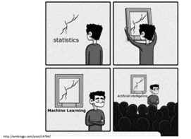

What is AI?
Artificial Intelligence (AI) refers to the simulation of human intelligence in machines that are programmed to think like humans and mimic their actions. The term can also be applied to any machine that exhibits traits associated with a human mind such as learning and problem-solving.
Categories of AI
AI can be broadly classified into three categories:
Narrow AI
Narrow AI, also known as Weak AI, refers to systems designed to handle specific tasks or a limited range of tasks. These are typically what we encounter in our daily lives and include technologies such as virtual assistants Siri and ChatGPT, as well as various chatbots. Most applications of machine learning fall under this category, where machine learning, a subset of AI, involves training algorithms on data to make predictions or decisions without being explicitly programmed for those specific tasks. Narrow AI operates under a set of defined rules and does not possess consciousness or self-awareness.
General AI
General AI, also known as Strong AI, is the theoretical concept of artificial intelligence systems that can understand, learn, and apply knowledge across a broad range of tasks, similar to human intelligence. Unlike Narrow AI, which is designed for specific tasks, General AI would have the capability to perform any intellectual task that a human can, including reasoning, problem-solving, planning, and learning. Cultural examples include the AI system Gideon from the TV show "The Flash".
Superintelligence
Superintelligence is a theoretical form of AI that not only mimics human intelligence but surpasses it, having cognitive abilities more advanced than humans in practically all domains, including creativity, general wisdom, and problem-solving. This type of AI often appears in science fiction, with examples like Skynet from the "Terminator" series and Samantha from the movie "Her." This category of AI would have self-awareness, consciousness, and perhaps even emotions.
What do we mean with AI?
The term artificial intelligence is a broad term used to describe all the categories. We gather data over time, and we use this data to try to predict and learn from it. For the broader public, it is commonly known as AI.
Machine Learning in AI
Most of the AI we see today is based on machine learning, a process where systems develop by learning from data. This data-driven learning parallels natural learning—just as birds learn to fly and humans learn to walk and talk, machines learn from patterns in data. But unlike natural learning, which relies on instinctual progression, machine learning requires structured data and sophisticated algorithms to evolve.